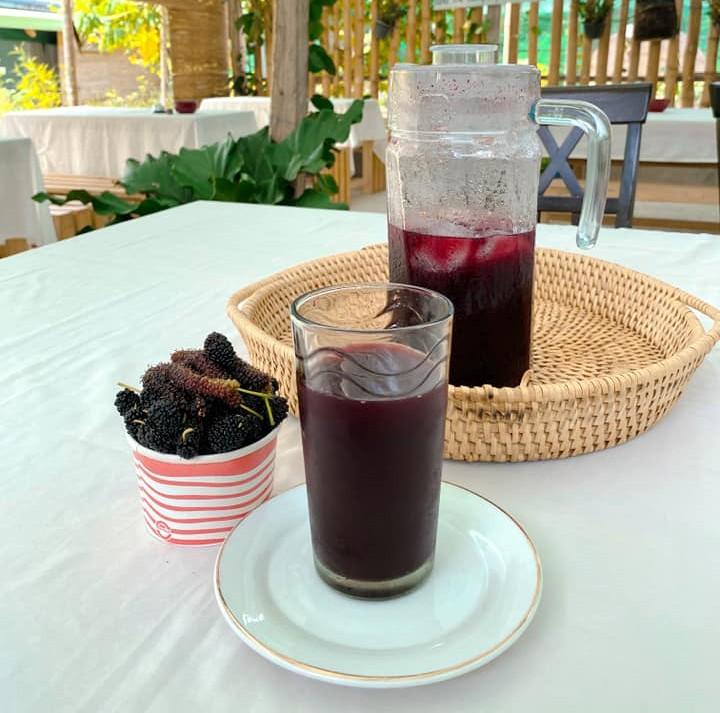
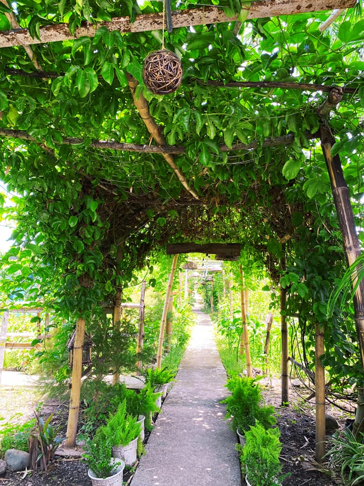
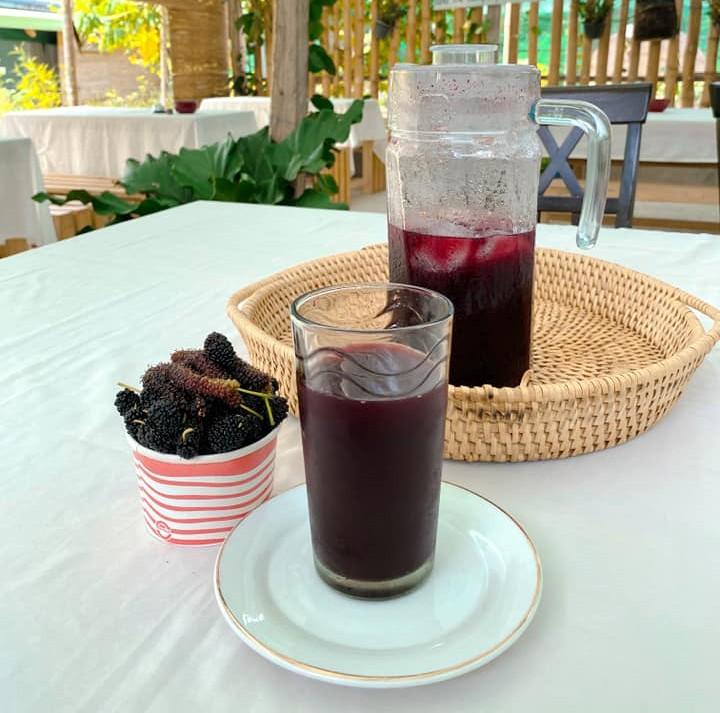
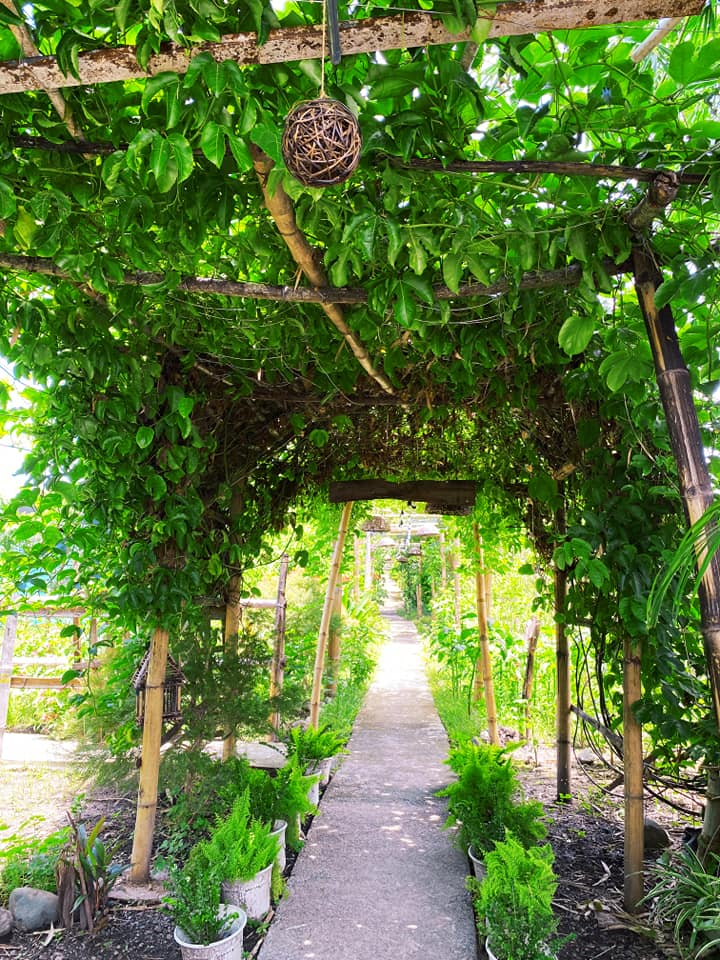
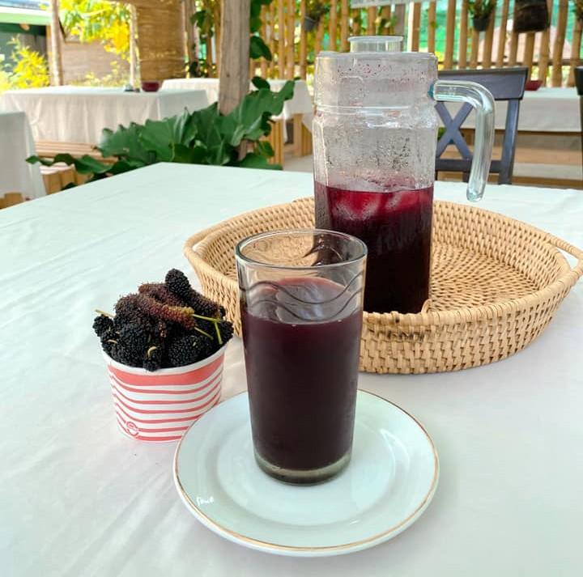
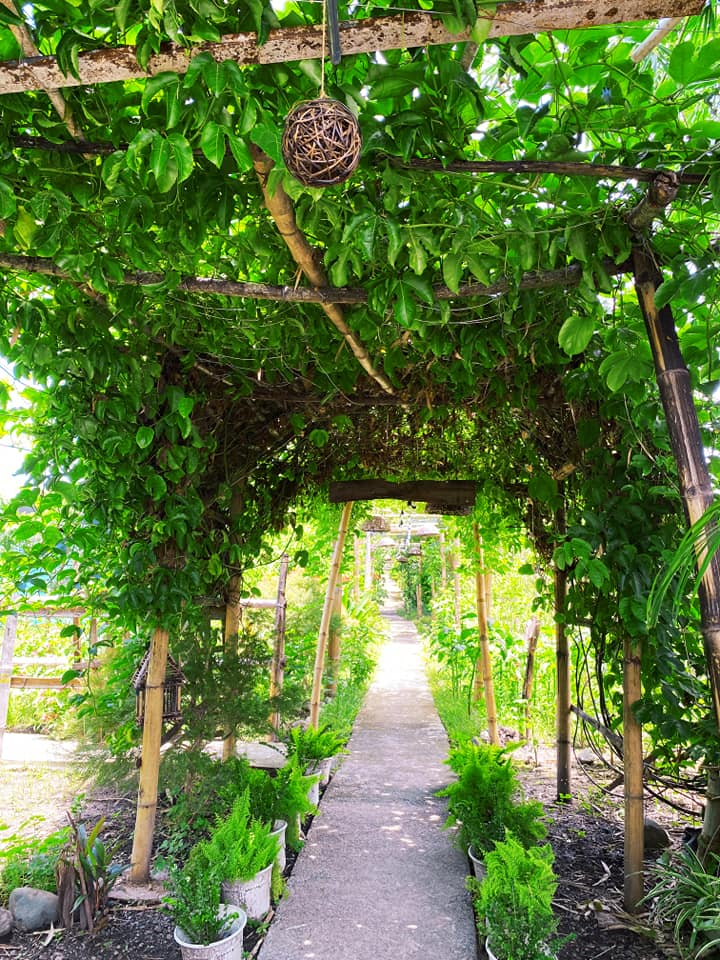
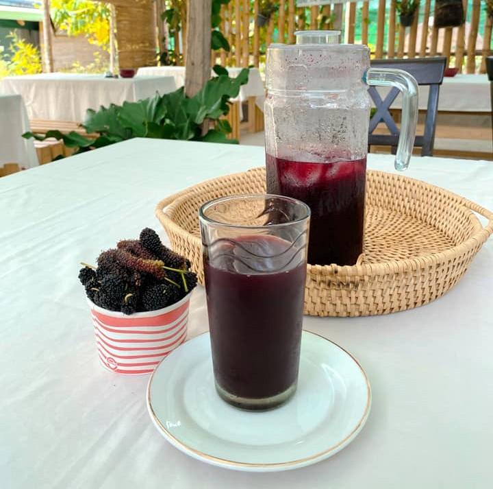
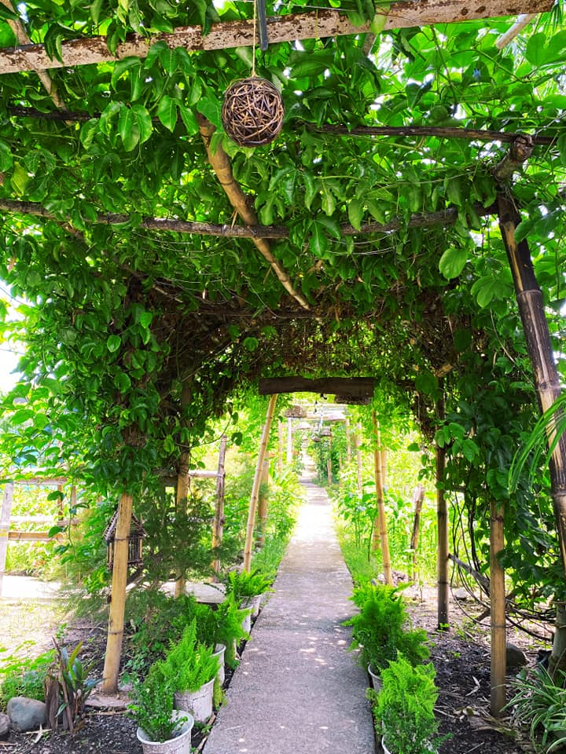

The Nic and Jas Berry Farm is a vibrant agro-tourism destination in Dupax del Sur where visitors can experience the joy of farm life and the freshness of locally grown berries. Set against a backdrop of lush greenery, the farm offers a hands-on experience where guests can pick ripe, juicy berries straight from the vine, learn about sustainable farming practices, and enjoy the taste of nature at its sweetest. Beyond its produce, the farm serves as a family-friendly getaway, blending agriculture, education, and recreation in one refreshing countryside escape.